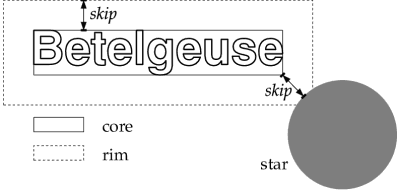

Node: The rim, Next: Overlaps with line objects, Previous: Basics about penalties, Up: Penalty scheme
Each label has a core area, which is the text area itself, and a rim, which is an area around the text area. Both are rectangles, separated by a skip that is the same as the one that separates labels and their respective celestial object, see Other layout parameters.

PP3 takes both rim and core into account. The relative significance of the rim can be set with e.g.
penalties rim 2000
which doubles the default value of 1000. With
penalties rim 0
the rim loses its effect completely. Notice that PP3 adds rim penalties also for the whole core area, so that the core is always more significant than the rim, no matter how you set the penalty values.
What's the point in the rim? The core avoids overlaps, but the rim is supposed to make approximations of labels with other things on the map less probable.
You may have noticed that the rim overlaps with the object (star or nebula) itself. Usually this only adds some sort of bias to the penalty values of the diagonal positions, but this direct contact is particularly useful for double stars: There both components get “their” label on “their” side due to the small rim overlaps with the respectively other component.